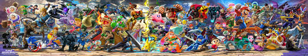

Hello! This is the Smash Bros. Ultimate® Intro Guide
The competitive scene of this game can be a little daunting, especially if you're new to this game. Essentially, this site is a guide that's menat to help players, both new and experienced, find what character may fit there playstyle best and provide guides to help players get the most out of their character
This site is going to be split into 4 parts
- The Home page (Where you are now)
- The Character page (Which describes the different playstyles and traits of each fighter)
- The Guides (This is a page filled with tutorials on each character)
- About Page (Just describes the goal of this site)
If you're a new player then I reccomend starting from the Character page so you can get a good idea on who you may want to try out before moving onto the guide page. With that said, let's get started.